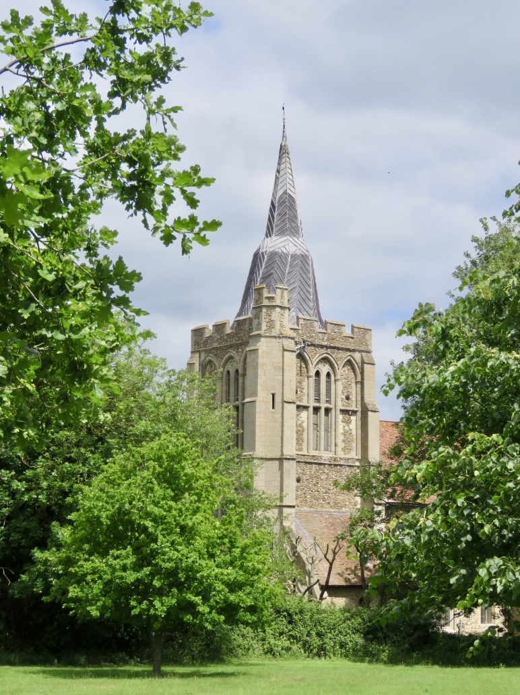
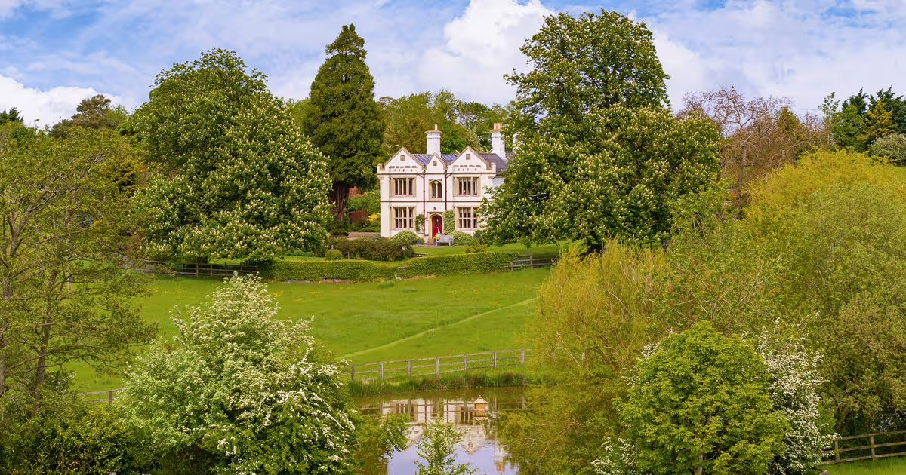

Where and When
We will be getting married at St Helena and St Mary's Church in Bourn, Cambridgeshire at 2.30pm on 1 August 2026. The reception* and dinner will take place at Bourn Lodge, which is approximately a 20-minute walk from the church. Parking will be available at Bourn Lodge for those arriving by car. Additionally, there is a small amount of on-road parking by the Church.
*The drinks reception will take place on grass, so please be mindful of this when selecting footwear.
Please find the addresses for both venues below:
Ceremony
St Helena and St Mary's Church
Church St, Bourn
Cambridge CB23 2SJ
View on Google Maps

Reception
Bourn Lodge
1 Caxton Rd
Cambridge CB23 2SX
View on Google Maps

Cambridge Recommendations
Here are a number of local recommendations if you would like to spend the weekend in Cambridge.
Hotels
- Wilde Aparthotels
- University Arms Hotel
Drinks
- The Punter
- The Blue Ball
- The Pickerell Inn
- The Free Press
- Cambridge Wine Merchants
Coffee
- Bould Brothers
- Hot Numbers
Dinner
- Margaret’s
- Parker’s Tavern
- The Pint Shop
- Midsummer House
- Vanderlyle
- Restaurant 22
Brunch / Lunch
- Fitzbillies
- Aromi
- Bread and Meat